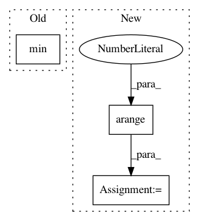

ce961ed06c22bf7c1178162450a88174fb401c14,tensorforce/core/preprocessing/normalize.py,Normalize,process,#Normalize#Any#,31
Before Change
def process(self, state):
state = state.astype(np.float32)
return (state - state.min()) / (state.max() - state.min() + util.epsilon)
After Change
def process(self, state):
// Min/max across every axis except batch dimension.
min = tf.reduce_min(input_tensor=state, axis=np.arange(1, util.rank(state)))
max = tf.reduce_max(input_tensor=state, axis=np.arange(1, util.rank(state)))
return (state - min) / (max - min + util.epsilon)
In pattern: SUPERPATTERN
Frequency: 3
Non-data size: 3
Instances
Project Name: reinforceio/tensorforce
Commit Name: ce961ed06c22bf7c1178162450a88174fb401c14
Time: 2017-11-25
Author: mi.schaarschmidt@gmail.com
File Name: tensorforce/core/preprocessing/normalize.py
Class Name: Normalize
Method Name: process
Project Name: tensorflow/magenta
Commit Name: 422678c8bf45574bb7c8a87ba434c455f9f7b877
Time: 2018-07-26
Author: iansimon@users.noreply.github.com
File Name: magenta/music/chord_inference.py
Class Name:
Method Name: sequence_note_pitch_vectors
Project Name: bulik/ldsc
Commit Name: 8b9b58c9bca513856be4e0741a4d378176451243
Time: 2014-05-20
Author: hilaryfinucane@gmail.com
File Name: ldsc/jackknife.py
Class Name: LstsqJackknife
Method Name: __compute_block_vals__